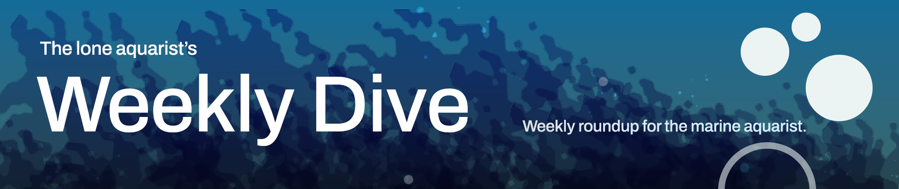
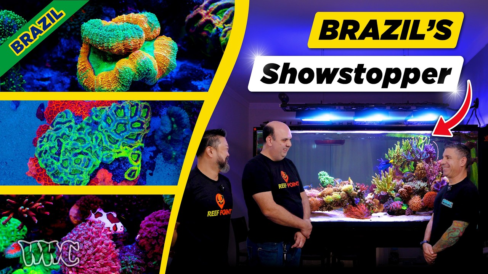

Friday, October 9, 2026 · 29 items · back issues
Howdy, it's Isaac again.
Happy Friday, reefing family, and welcome back to my Weekly Dive.
Here are the biggest things worth knowing:
Let's dive into the news touching our hobby…
Test of 1 kWh battery system's ability to sustain a reef tank through blackout, examining circulation, aeration and filtration runtime. Practical assessment of backup power sizing for system-critical periods.
Reefs.com · danireef · Oct 6 · reefs.com
A two-year field report on MRC filter-roller performance at a coral farm. Practical data on mechanical filtration will interest keepers choosing equipment.
15 min Tidal Gardens · Oct 8 · youtube.com
Videotour of a custom 2,500-liter reef tank and paludarium built into owner-designed home in Bavaria, featuring anthias, gem tangs, leopard wrasses, and integrated filtration. Documentation of high-end European system design and husbandry practices.
15 min SaltwaterAquarium.com · SaltwaterAquarium · Oct 6 · youtube.com
Controlled experiment shows weathered volcanic sediment enhances photophysiology in three aquarium coral species. Demonstrates how mineral supplementation and environmental chemistry affect coral health and productivity.
+1 similar Royal Society Open Science · Frank Förster et al. · Oct 7 · doi.org
Research reframes coral gastrovascular cavity as anaerobic gut ecosystem with distinct microbial communities. New understanding of coral internal physiology and heterotrophy mechanisms fundamental to keeping corals alive.
Applied and Environmental Microbiology · Claudia Pogoreutz · Oct 5 · doi.org
Genome sequence published for Siderastrea siderea, a common aquarium coral. Genomic data enables deeper understanding of coral physiology, symbiosis, and stress response.
Wellcome Open Research · Richard F. Karp et al. · Oct 8 · doi.org
Research on how Acropora microbiomes respond to combined ocean acidification and organic pollution stress. Understanding coral holobiont stress responses directly informs what parameters matter most in captive systems.
Microorganisms · Qi Ming Zhao et al. · Oct 4 · doi.org
Seasonal patterns in coral skeletal microbiota from South China Sea marginal reef. Understanding coral holobiont biology informs what stressors and conditions matter in aquarium systems.
BMC Microbiology · Zhenjun Qin et al. · Oct 8 · doi.org
Plant extract shows antibacterial activity against Vibrio anguillarum, a trout pathogen. Results could inform disease management in marine farms raising aquaculture corals or ornamentals.
Frontiers in Marine Science — Journal · Teoman Özgür Sökmen · Oct 9 · frontiersin.org
iSeahorse crowdsources seahorse sighting data on iNaturalist to support research and protection efforts. Seahorses are kept in marine tanks and understanding their wild populations informs captive husbandry practices.
Project Seahorse — Bluesky · Oct 2 · bsky.app
New AI framework uses super-resolution imaging to identify sea cucumbers in shallow reef UAV footage, addressing camouflage and blur challenges. Automated monitoring could scale ecological surveys, though application to tank-keeping remains distant.
Marine Pollution Bulletin · Fan Zhao et al. · Oct 7 · doi.org
The expedition explored the Nola seamount complex, where deep-sea corals and sponges torm vulnerable marine ecosystems that provide important habitat for a wide range of marine life.
YouTube.com · Oct 5 · youtu.be
+1 similar Frontiers in Marine Science · Gianna Paden et al. · Oct 7 · doi.org
Agaricia coral recruitment failed after 2019 bleaching and stony coral tissue loss disease in the USVI, with partial recovery by 2022. This directly measures reef resilience to the dual stressors reef keepers track in wild populations.
Frontiers in Marine Science — Journal · Marilyn E. Brandt · Oct 9 · frontiersin.org
Field trial combining acoustic cues, engineered habitat, and living materials to enhance coral larval settlement in Hawaiʻi. Demonstrates conservation restoration techniques relevant to understanding coral recruitment and settlement biology.
Communications Biology · Aaron A. Thode et al. · Oct 8 · doi.org
Review synthesizes how mangrove ecosystems buffer corals from thermal stress through temperature modulation, pH buffering, and oxygen dynamics. Understanding refuge mechanisms informs where wild corals may persist under climate change and which systems merit protection.
International Journal of Scientific Research in Science and Technology · Nisha S. Rajbhar et al. · Oct 7 · doi.org
Citizen science combined with deep learning mapped coral cover across 742 Great Barrier Reef sites 2022–2025. Large-scale, validated dataset reveals reef health trends and demonstrates scalable monitoring technology.
Limnology and Oceanography Letters · Christopher L. Lawson et al. · Oct 5 · doi.org
Frontiers in Marine Science · Alex S. Wegmann et al. · Oct 6 · doi.org
Coral skeletal records reveal Atlantic influence on Red Sea temperature and salinity over 346 years. Long-term oceanographic patterns in reef regions inform understanding of natural variability underlying coral stress.
Geophysical Research Letters · Ian Plummer et al. · Oct 5 · doi.org
Study found no population-level behavioral change in damselfish from short-term acidification exposure, despite prior reports. Challenges assumptions about CO₂ sensitivity and individual variation in reef fish responses.
Journal of Animal Ecology · Dominique G. Roche et al. · Oct 8 · doi.org
Satellite analysis of a turbid southwestern Atlantic reef over 14 years reveals shifts in benthic habitat composition and spatial structure. Long-term habitat monitoring at scale reveals stress patterns that single-site surveys cannot detect.
Remote Sensing in Ecology and Conservation · Thais Andrade Galvão de Medeiros et al. · Oct 7 · doi.org
Deep learning system for automated crown-of-thorns starfish detection in reef surveys. Addresses a major reef pest through technology that could improve monitoring and management of wild reefs.
Frontiers in Marine Science · Yogasrinithi P. et al. · Oct 5 · doi.org
Fish assemblages on remaining Acropora patches in Colombian Caribbean show resilience despite 90% branching coral loss. Documents resistance mechanisms in degraded reefs and coral-fish interdependence.
PeerJ · Rocío García‐Urueña et al. · Oct 5 · doi.org
Coastal upwelling intensity along southeastern China is projected to increase through 2100 under climate scenarios. Upwelling drives nutrient cycling and regional ecosystem productivity affecting wild reef dynamics.
Frontiers in Marine Science — Journal · Fanglou Liao · Oct 9 · frontiersin.org
The Great Southern Reef Research Partnership surveyed and revisited monitoring sites across five Australian states. Long-term reef surveillance establishes the ecological baseline reef keepers watch in wild populations.
Great Southern Reef Foundation — Bluesky · Oct 8 · bsky.app
Research on how sea ice features affect Arctic phytoplankton and primary production under climate change. Models coral-reef productivity drivers in cold-water systems with shifting baselines.
Frontiers in Marine Science — Journal · Shuang Gao · Oct 8 · frontiersin.org
Scripps scientists discuss El Niño impact on California kelp and marine ecosystems. Kelp ecosystems are temperate, not tropical reef, but ENSO drives global reef bleaching cycles.
Scripps Institution of Oceanography — Bluesky · Oct 7 · bsky.app
Study of spatial partitioning in reef fish despite shared environmental drivers. Incremental work on wild reef fish behavior and habitat use.
Landscape Ecology · Isla N. Spence et al. · Oct 8 · doi.org

This 400-Gallon Reef Is One of Brazil’s Most Impressive | SPS, LPS & AquascapingTour of an impressive 400-gallon Brazilian reef featuring SPS, LPS, and custom aquascaping. Shows mature system design, husbandry choices, and equipment setup worth learning from.
24 min World Wide Corals · Oct 8 · youtube.com
One email a week, free. Every item links to its source.